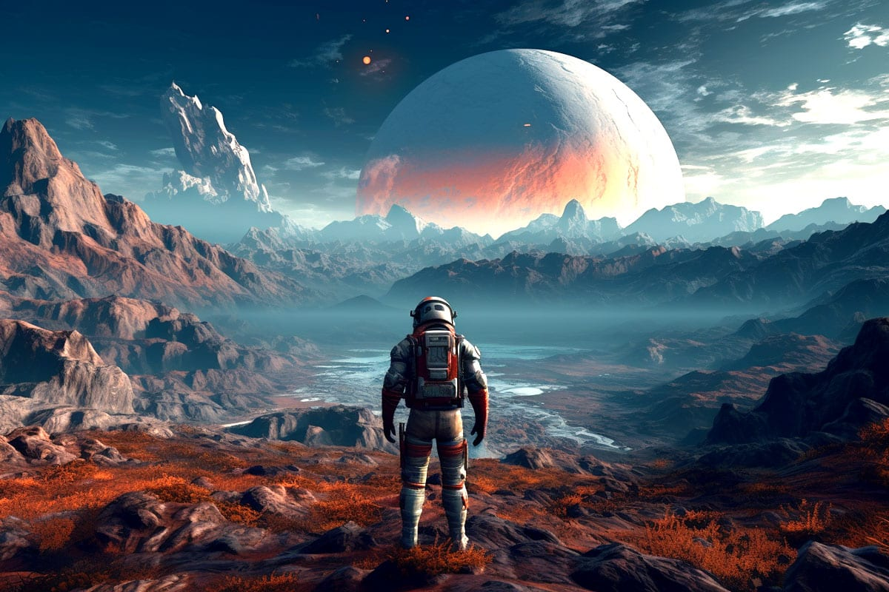

Starfield est le premier nouvel univers en 25 ans de Bethesda Game Studios, les créateurs récompensés de The Elder Scrolls V: Skyrim et Fallout 4. Dans ce RPG nouvelle génération dans les étoiles, créez votre personnage et explorez avec une liberté sans précédent lors d'une aventure épique pour résoudre le plus grand mystère de l'humanité. En 2330, l'humanité s'est aventurée au-delà de notre système solaire pour s'établir sur de nouvelles planètes et partir à la découverte de l'espace. Vous rejoindrez Constellation, le dernier groupe d'explorateurs de l'espace à la recherche d'artéfacts rares à travers la galaxie, et partirez explorer l'immensité de l'espace dans le jeu le plus vaste et le plus ambitieux de Bethesda Game Studios à ce jour.